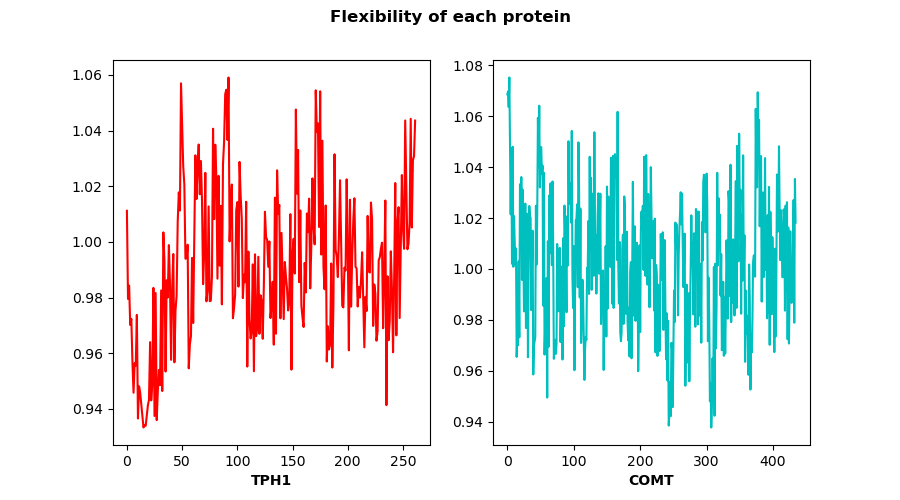
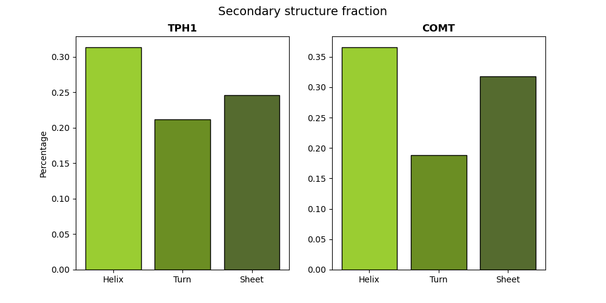
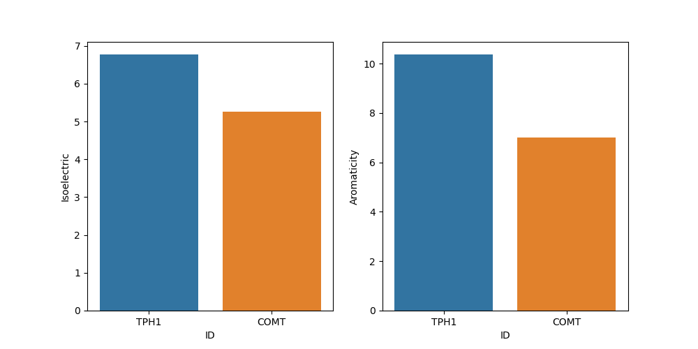
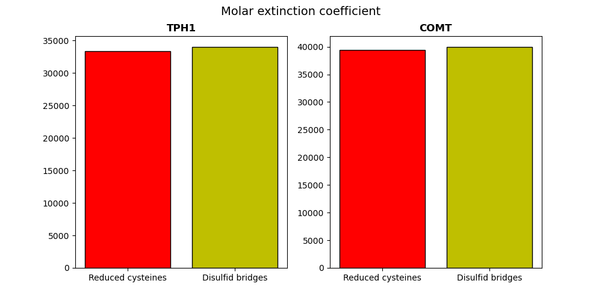
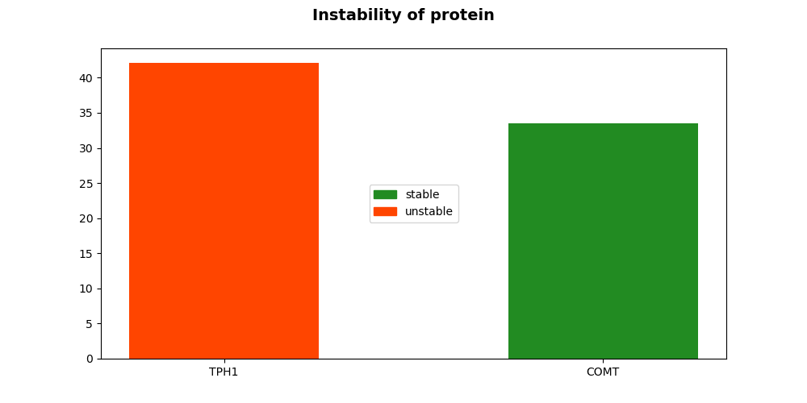

Molecular weight for TPH1 and COMT are respectively 50984.583 and 30036.712 (in daltons)
Grand average of hydropathicity index (GRAVY) represents the hydrophobicity value of a peptide. Positive GRAVY values indicate hydrophobic, negative values mean hydrophilic.
GRAVY value for TPH1 is -0.449 and for COMT equals 0.16
Proteins are dynamic entities, and they possess an inherent flexibility that allows them to function through molecular interactions within the cell, among cells and even between organisms
Here, flexibility is presented from Vihinien et.al (1994, Proteins, 19, 141-149.) method
Represented as occurrence of three ways the protein can fold within secondary structure.
Isoelectric point it is the pH at which a protein contains on average the same number of positive and negative charges.
The presence of aromatic amino acids in seq [%]. Based on frequency of Phe+Trp+Tyr.
Calculates the molar extinction coefficient assuming cysteines (reduced) and cystines residues (Cys-Cys-bond)
The molar attenuation coefficient is a measurement of how strongly a chemical species attenuates light at a given wavelength.
Measuring stability of the proteins. Any value above 40 means the protein is unstable, which means it has a short half life
